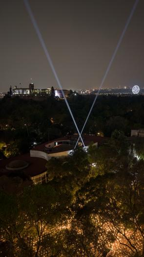
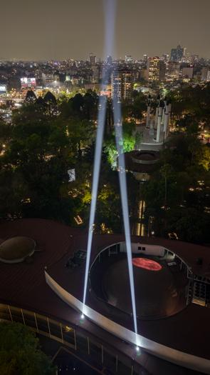
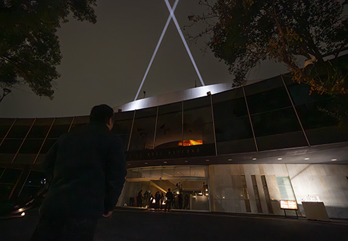
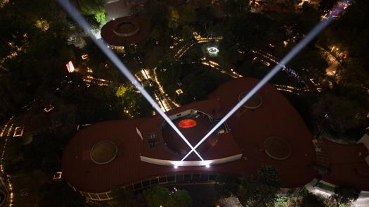
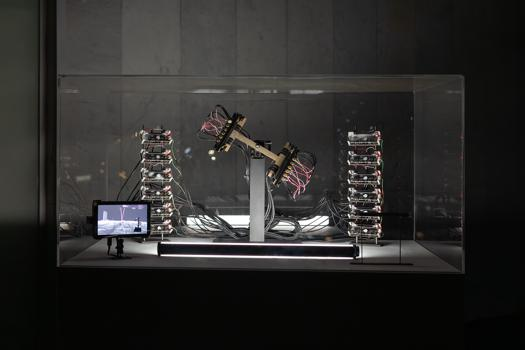

Collider Beacon, 2026
| 👤for | Rafael Lozano-Hemmer |
|---|---|
| #Year | 2026 |
| 🔗Official Site | lozano-hemmer.com/collider_beacon.php |
| 📋I did | Software |
"Collider Beacon" is an aerial installation consisting of a powerful beam of light that slowly rotates over the Museo de Arte Moderno's Sculpture Park, functioning like a timekeeper or a sky-scanning radar. The beam’s intensity subtly flickers in real time, responding to otherwise invisible cosmic radiation measured by a custom-built sensor displayed at the museum’s entrance. The sensor, composed of a dozen Geiger counters arranged to read directional data, detects the angle at which muons strike the Earth, and this live information directly modulates the beacon's brightness.





Acknowledgment
This artwork by Rafael Lozano-Hemmer is the result of the combined efforts of a talented and diverse group of professionals. Each person has contributed unique skills and expertise to the creation of this piece. For more information about the team and their roles, please visit our official website.